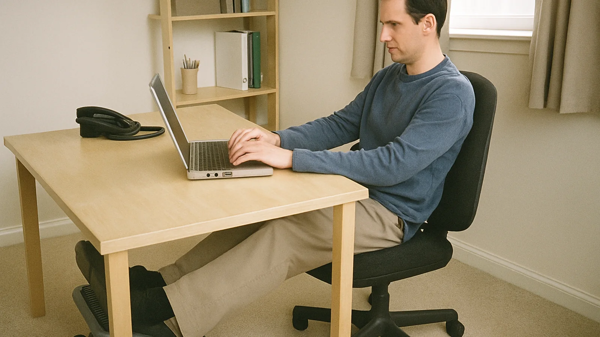

Desk comfort field guide
The Small Foot Support Habit That Can Change a Long Desk Day
A warm, practical look at footrest height, feel, floor space, and the small setup details that matter more than fancy ergonomic promises.
Last updated 2026-05-23

Under-desk comfort is rarely one dramatic purchase. It is usually a quiet chain of small decisions: chair height, keyboard reach, how much room is under the desk, and whether your feet have somewhere steady to land. A footrest can help when the desk is a little too tall, the chair is raised to meet a keyboard tray, or a shorter person feels their legs dangling through a long work session.
My editorial rule for this category is simple: judge the footrest by the routine it creates, not by how impressive it looks in a product photo. The better choice is the one you will actually keep in position, clean around, and use without thinking about it every five minutes. That is why a practical guide to the best footrest for under desk setups should talk about height, surface feel, floor grip, movement, and room constraints together.
Fit
Match height to your chair, not to a generic ideal.
Feel
Firm, foam, wood, and rocking designs all serve different habits.
Space
Footprint and floor grip decide whether the support stays useful.
Start with the desk mismatch, not the accessory
Many people shop for a footrest after noticing tired legs, pressure under the thighs, or a habit of wrapping feet around chair legs.
- Check where your knees naturally land.
- Keep the footrest close enough that your back stays against the chair.
- Favor quiet, stable materials if you share a room.
Comfort usually comes from removing one small annoyance, not from building a perfect-looking workstation.
Many people shop for a footrest after noticing tired legs, pressure under the thighs, or a habit of wrapping feet around chair legs. In practice, the best setups feel boring in a good way: feet supported, ankles free to shift, and no constant tug-of-war between desk height and chair height.
Choose the surface by your work rhythm
A textured top can help shoes stay put, while a smoother or cushioned top may feel better for socks-at-home work.
- Check where your knees naturally land.
- Keep the footrest close enough that your back stays against the chair.
- Favor quiet, stable materials if you share a room.
Comfort usually comes from removing one small annoyance, not from building a perfect-looking workstation.
A textured top can help shoes stay put, while a smoother or cushioned top may feel better for socks-at-home work. In practice, the best setups feel boring in a good way: feet supported, ankles free to shift, and no constant tug-of-war between desk height and chair height.
Look at movement honestly
Rocking designs are pleasant for fidgety work, but they can distract people who need a fixed platform for detailed tasks.
- Check where your knees naturally land.
- Keep the footrest close enough that your back stays against the chair.
- Favor quiet, stable materials if you share a room.
Comfort usually comes from removing one small annoyance, not from building a perfect-looking workstation.
Rocking designs are pleasant for fidgety work, but they can distract people who need a fixed platform for detailed tasks. In practice, the best setups feel boring in a good way: feet supported, ankles free to shift, and no constant tug-of-war between desk height and chair height.
Measure the space under the desk
Pedestals, cords, chair casters, and storage boxes often decide whether a large footrest will be helpful or annoying.
- Check where your knees naturally land.
- Keep the footrest close enough that your back stays against the chair.
- Favor quiet, stable materials if you share a room.
Comfort usually comes from removing one small annoyance, not from building a perfect-looking workstation.
Pedestals, cords, chair casters, and storage boxes often decide whether a large footrest will be helpful or annoying. In practice, the best setups feel boring in a good way: feet supported, ankles free to shift, and no constant tug-of-war between desk height and chair height.
Use a simple buying framework
The strongest shortlist balances adjustable height, grip, easy cleaning, and a footprint that does not crowd the chair.
- Check where your knees naturally land.
- Keep the footrest close enough that your back stays against the chair.
- Favor quiet, stable materials if you share a room.
Comfort usually comes from removing one small annoyance, not from building a perfect-looking workstation.
The strongest shortlist balances adjustable height, grip, easy cleaning, and a footprint that does not crowd the chair. In practice, the best setups feel boring in a good way: feet supported, ankles free to shift, and no constant tug-of-war between desk height and chair height.
For readers comparing options, the LeStallion review of under-desk footrest choices is a useful next stop after you know what your own desk setup needs.
Real-world fit notes before you decide
A footrest belongs in the same mental category as a chair mat, keyboard tray, monitor riser, or task lamp: it only works when it fits the room and the person using it. Before choosing one, sit at the desk at the time of day when you normally feel the most restless. Notice whether your heels are floating, your knees are higher than your hips, your chair is raised only to meet the desk, or your feet keep searching for a chair base. Those little clues are more useful than a generic product promise.
In a home office, the best answer may be a quiet adjustable platform that can stay under the desk without becoming clutter. In a classroom office, reception station, or shared workroom, the better answer may be something wipeable and stable. In a bedroom desk corner, the winner may simply be the footrest that leaves enough room to pull the chair back and vacuum around cords.
Decision criteria that keep the choice practical
- Height range: choose enough lift to support your feet without pushing your knees into the underside of the desk.
- Surface feel: textured plastic, foam, and wood all feel different with shoes, socks, or bare feet.
- Base grip: a sliding footrest becomes irritating quickly, especially on hard floors.
- Movement: rocking can help active sitters, while fixed platforms suit people who want steady support.
- Cleaning: dust and shoe marks are normal under a desk, so complicated grooves may need more attention.
Mistakes worth avoiding
Do not buy only by the tallest setting, because too much height can fold the legs into an awkward angle. Do not buy only by softness, because a cushion that collapses may stop supporting your feet halfway through the day. Do not ignore the chair, because the chair height usually explains why the footrest is needed in the first place. And do not treat a footrest as medical equipment unless a qualified professional has told you to use one for a specific reason.
A calm setup is usually modest: the footrest sits close, the chair stays stable, the desk does not feel crowded, and the user can shift gently without thinking about the accessory. If the product makes you constantly adjust the room around it, keep comparing.
A simple seven-day trial
When a footrest first arrives, do not judge it only in the first ten minutes. Try a simple week-long routine. On the first day, place it close enough that your heels land naturally. On the second day, adjust the height one step and notice whether your shoulders or thighs feel more relaxed. On the third day, test it with the shoes or socks you normally wear at the desk. On the fourth day, move the chair back and forward several times to see whether the footrest interrupts the room. On the fifth day, clean around it and decide whether the design is easy to live with. On the sixth day, use it during a focused work block. On the seventh day, ask whether you forgot about it in a good way.
This trial matters because under-desk accessories often fail through small annoyances rather than obvious defects. A platform can be technically adjustable but too awkward to change. A soft surface can feel pleasant at first but too warm later. A rocking design can feel fun during a break but distracting during careful writing. Slow observation gives you a better answer than a single staged sitting position.
Comparison notes for different users
A shorter user at a fixed-height desk may need more lift and a stable top. A taller user may only want a gentle angle that keeps feet from tucking behind the chair. Someone who takes many video calls may prefer a quiet, fixed platform. Someone who fidgets during reading may enjoy a rocking or textured option. A person in a shared office may care most about neutral styling and easy cleaning, while a home worker may care more about soft feel during relaxed sessions.
The important point is to match the footrest to the actual constraint. If the constraint is dangling feet, height is the priority. If the constraint is restlessness, movement may be useful. If the constraint is a cramped desk, footprint matters more than premium features. If the constraint is floor type, grip and weight may decide the experience.
Final practical note
Good desk comfort is easier to maintain when every item has a clear job. A footrest should support the feet, reduce the temptation to perch on chair legs, and make the chair height feel more natural. If it also keeps the room tidy and easy to reset, it has a much better chance of becoming part of the daily routine.
FAQ
Is a footrest worth considering for desk work?
It can be useful when your feet do not rest flat or when your chair and desk height do not match cleanly.
Should a footrest be soft or firm?
Choose by task: firm support feels stable for typing, while softer foam can be pleasant for short relaxed sessions.
How high should it be?
Start low, then raise it only until your thighs feel supported and your shoulders can stay relaxed.
Can a footrest fix bad posture by itself?
No. It is one part of the setup; chair height, monitor position, breaks, and habits still matter.
What is the easiest mistake to avoid?
Do not place the footrest so far away that you have to reach with your toes or slide forward in the chair.
Editorial note
Desk Harbor Notes writes plain-language desk setup guides from an editorial research perspective. We do not claim clinical testing or professional ergonomic certification; readers should follow manufacturer instructions and consult qualified guidance for medical concerns.